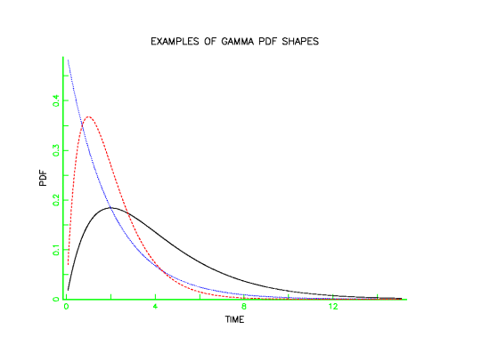
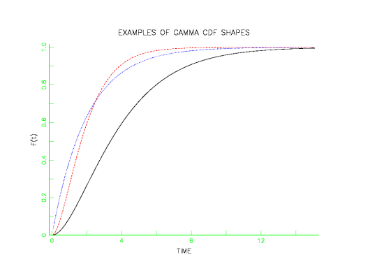
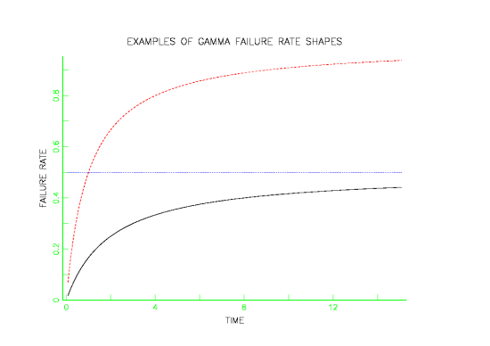
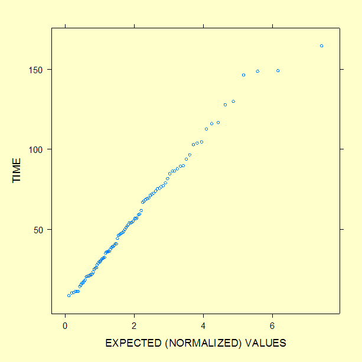

|
8.
Assessing Product Reliability
8.1. Introduction 8.1.6. What are the basic lifetime distribution models used for non-repairable populations?
|
|||
| Formulas for the gamma model |
Formulas and Plots
There are two ways of writing (parameterizing) the gamma distribution that are common in the literature. In addition, different authors use different symbols for the shape and scale parameters. Below we show two ways of writing the gamma, with "shape" parameter \(a = \alpha\), and "scale" parameter \(b = 1/\beta\). $$ \begin{array}{ll} \mbox{PDF:} & f(t, a, b) = \frac{b^a}{\Gamma(a)}t^{a-1} e^{-bt} \\ & \\ & f(t, \alpha, \beta) = \frac{1}{\beta^{\alpha}\Gamma(\alpha)}t^{\alpha-1}e^{-t/\beta} \\ & \\ \mbox{CDF:} & F(t) = \int \limits_{0}^{t} f(t)dt \\ & \\ \mbox{Reliability:} & R(t) = 1 - F(t) \\ & \\ \mbox{Failure Rate:} \,\, & h(t) = f(t)/R(t) \\ & \\ \mbox{Mean:} & a/b \mbox{ or } \alpha \beta \\ & \\ \mbox{Variance:} & a/b^2 \mbox{ or } \alpha \beta^2 \end{array} $$ |
||
| The exponential is a special case of the gamma | Note: When \(a\) = 1,
the gamma reduces to an
exponential distribution with \(b = \lambda\).
Another well-known statistical distribution, the Chi-Square, is also a special case of the gamma. A Chi-Square distribution with \(n\) degrees of freedom is the same as a gamma with \(a = n\)/2 and \(b\) = 0.5 (or \(\beta\) = 2). The following plots give examples of gamma PDF, CDF and failure rate shapes. |
||
| Shapes for gamma data |  | ||
| Gamma CDF shapes |  | ||
| Gamma failure rate shapes |  | ||
| The gamma is used in "Standby" system models and also for Bayesian reliability analysis |
Uses of the Gamma Distribution Model
|
||
| Gamma probability plot |
We generated 100 random gamma data points using shape parameter \(\alpha\) = 2
and scale parameter \(\beta\) = 30.
A gamma probability plot
of the 100 data points is shown below.
 The value of the shape parameter \(\alpha\) can be estimated from data using $$ \hat{\alpha} = \left[ \frac{\bar{t}}{s_t} \right]^2 $$ the squared ratio of mean failure time to the standard deviation of the failure times. Using an example solved in the section on standby models, where \(\alpha\) = 2, \(\beta\) = 30, and \(t\) = 24 months, the PDF, CDF, reliability, and failure rate are the following. PDF = 0.01198 CDF = 0.19121 Reliability = 0.80879 Failure Rate = 0.01481 Functions for computing gamma distribution PDF values, CDF values, reliability values, failure rates, and for producing probability plots, are found in both Dataplot code and R code. |
||